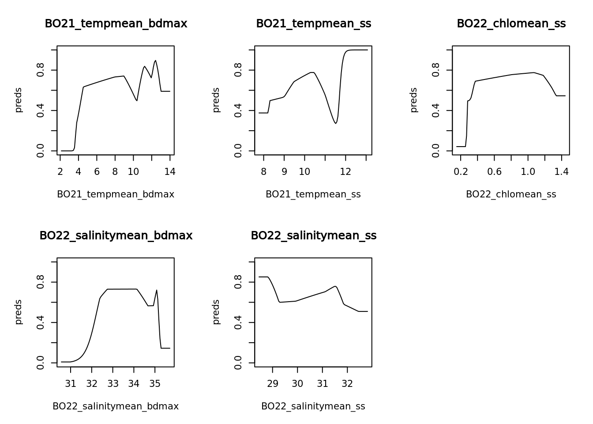
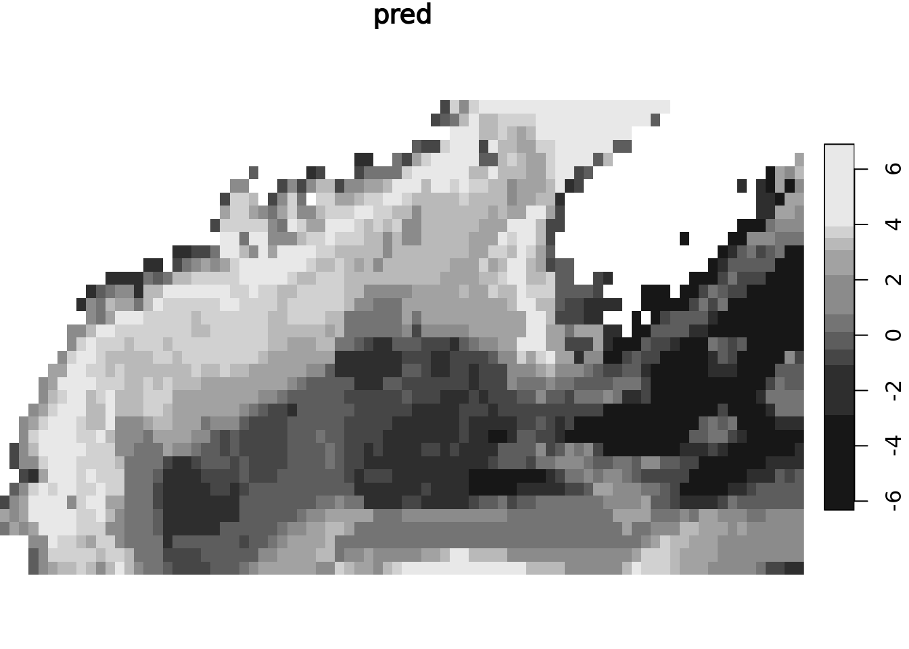

<!DOCTYPE html>
<html xmlns="http://www.w3.org/1999/xhtml" lang="en" xml:lang="en"><head>

<meta charset="utf-8">
<meta name="generator" content="quarto-1.0.36">

<meta name="viewport" content="width=device-width, initial-scale=1.0, user-scalable=yes">


<title>Team_SDM_OHW24</title>
<style>
code{white-space: pre-wrap;}
span.smallcaps{font-variant: small-caps;}
span.underline{text-decoration: underline;}
div.column{display: inline-block; vertical-align: top; width: 50%;}
div.hanging-indent{margin-left: 1.5em; text-indent: -1.5em;}
ul.task-list{list-style: none;}
pre > code.sourceCode { white-space: pre; position: relative; }
pre > code.sourceCode > span { display: inline-block; line-height: 1.25; }
pre > code.sourceCode > span:empty { height: 1.2em; }
.sourceCode { overflow: visible; }
code.sourceCode > span { color: inherit; text-decoration: inherit; }
div.sourceCode { margin: 1em 0; }
pre.sourceCode { margin: 0; }
@media screen {
div.sourceCode { overflow: auto; }
}
@media print {
pre > code.sourceCode { white-space: pre-wrap; }
pre > code.sourceCode > span { text-indent: -5em; padding-left: 5em; }
}
pre.numberSource code
  { counter-reset: source-line 0; }
pre.numberSource code > span
  { position: relative; left: -4em; counter-increment: source-line; }
pre.numberSource code > span > a:first-child::before
  { content: counter(source-line);
    position: relative; left: -1em; text-align: right; vertical-align: baseline;
    border: none; display: inline-block;
    -webkit-touch-callout: none; -webkit-user-select: none;
    -khtml-user-select: none; -moz-user-select: none;
    -ms-user-select: none; user-select: none;
    padding: 0 4px; width: 4em;
    color: #aaaaaa;
  }
pre.numberSource { margin-left: 3em; border-left: 1px solid #aaaaaa;  padding-left: 4px; }
div.sourceCode
  {   }
@media screen {
pre > code.sourceCode > span > a:first-child::before { text-decoration: underline; }
}
code span.al { color: #ff0000; font-weight: bold; } /* Alert */
code span.an { color: #60a0b0; font-weight: bold; font-style: italic; } /* Annotation */
code span.at { color: #7d9029; } /* Attribute */
code span.bn { color: #40a070; } /* BaseN */
code span.bu { } /* BuiltIn */
code span.cf { color: #007020; font-weight: bold; } /* ControlFlow */
code span.ch { color: #4070a0; } /* Char */
code span.cn { color: #880000; } /* Constant */
code span.co { color: #60a0b0; font-style: italic; } /* Comment */
code span.cv { color: #60a0b0; font-weight: bold; font-style: italic; } /* CommentVar */
code span.do { color: #ba2121; font-style: italic; } /* Documentation */
code span.dt { color: #902000; } /* DataType */
code span.dv { color: #40a070; } /* DecVal */
code span.er { color: #ff0000; font-weight: bold; } /* Error */
code span.ex { } /* Extension */
code span.fl { color: #40a070; } /* Float */
code span.fu { color: #06287e; } /* Function */
code span.im { } /* Import */
code span.in { color: #60a0b0; font-weight: bold; font-style: italic; } /* Information */
code span.kw { color: #007020; font-weight: bold; } /* Keyword */
code span.op { color: #666666; } /* Operator */
code span.ot { color: #007020; } /* Other */
code span.pp { color: #bc7a00; } /* Preprocessor */
code span.sc { color: #4070a0; } /* SpecialChar */
code span.ss { color: #bb6688; } /* SpecialString */
code span.st { color: #4070a0; } /* String */
code span.va { color: #19177c; } /* Variable */
code span.vs { color: #4070a0; } /* VerbatimString */
code span.wa { color: #60a0b0; font-weight: bold; font-style: italic; } /* Warning */
</style>


<script src="Final_SDM_project_workflow_files/libs/clipboard/clipboard.min.js"></script>
<script src="Final_SDM_project_workflow_files/libs/quarto-html/quarto.js"></script>
<script src="Final_SDM_project_workflow_files/libs/quarto-html/popper.min.js"></script>
<script src="Final_SDM_project_workflow_files/libs/quarto-html/tippy.umd.min.js"></script>
<script src="Final_SDM_project_workflow_files/libs/quarto-html/anchor.min.js"></script>
<link href="Final_SDM_project_workflow_files/libs/quarto-html/tippy.css" rel="stylesheet">
<link href="Final_SDM_project_workflow_files/libs/quarto-html/quarto-syntax-highlighting.css" rel="stylesheet" id="quarto-text-highlighting-styles">
<script src="Final_SDM_project_workflow_files/libs/bootstrap/bootstrap.min.js"></script>
<link href="Final_SDM_project_workflow_files/libs/bootstrap/bootstrap-icons.css" rel="stylesheet">
<link href="Final_SDM_project_workflow_files/libs/bootstrap/bootstrap.min.css" rel="stylesheet" id="quarto-bootstrap" data-mode="light">
<script src="Final_SDM_project_workflow_files/libs/htmlwidgets-1.6.1/htmlwidgets.js"></script>
<script src="Final_SDM_project_workflow_files/libs/jquery-1.12.4/jquery.min.js"></script>
<link href="Final_SDM_project_workflow_files/libs/leaflet-1.3.1/leaflet.css" rel="stylesheet">
<script src="Final_SDM_project_workflow_files/libs/leaflet-1.3.1/leaflet.js"></script>
<link href="Final_SDM_project_workflow_files/libs/leafletfix-1.0.0/leafletfix.css" rel="stylesheet">
<script src="Final_SDM_project_workflow_files/libs/proj4-2.6.2/proj4.min.js"></script>
<script src="Final_SDM_project_workflow_files/libs/Proj4Leaflet-1.0.1/proj4leaflet.js"></script>
<link href="Final_SDM_project_workflow_files/libs/rstudio_leaflet-1.3.1/rstudio_leaflet.css" rel="stylesheet">
<script src="Final_SDM_project_workflow_files/libs/leaflet-binding-2.1.1/leaflet.js"></script>


</head>

<body class="fullcontent">

<div id="quarto-content" class="page-columns page-rows-contents page-layout-article">

<main class="content" id="quarto-document-content">

<header id="title-block-header" class="quarto-title-block default">
<div class="quarto-title">
<h1 class="title">Team_SDM_OHW24</h1>
</div>


<div class="quarto-title-meta">

    
    
  </div>
  

</header>

<section id="maine-icons-a-species-distribution-model-and-educational-tool-to-highlight-gulf-of-maine-creatures" class="level1">
<h1>Maine Icons: A Species Distribution Model and Educational Tool to Highlight Gulf of Maine Creatures</h1>
<p>Entire workflow of SDM using Maxnet package in R</p>
<section id="installing-libraries" class="level2">
<h2 class="anchored" data-anchor-id="installing-libraries">Installing libraries</h2>
<div class="cell">
<div class="sourceCode cell-code" id="cb1"><pre class="sourceCode r code-with-copy"><code class="sourceCode r"><span id="cb1-1"><a href="#cb1-1" aria-hidden="true" tabindex="-1"></a>  <span class="co">#required libraries for data retreival, cleaning, and modeling</span></span>
<span id="cb1-2"><a href="#cb1-2" aria-hidden="true" tabindex="-1"></a><span class="fu">library</span>(tidyverse)</span></code><button title="Copy to Clipboard" class="code-copy-button"><i class="bi"></i></button></pre></div>
<div class="cell-output cell-output-stderr">
<pre><code>── Attaching core tidyverse packages ──────────────────────── tidyverse 2.0.0 ──
✔ dplyr     1.1.0     ✔ readr     2.1.4
✔ forcats   1.0.0     ✔ stringr   1.5.0
✔ ggplot2   3.4.1     ✔ tibble    3.1.8
✔ lubridate 1.9.2     ✔ tidyr     1.3.0
✔ purrr     1.0.1     
── Conflicts ────────────────────────────────────────── tidyverse_conflicts() ──
✖ dplyr::filter() masks stats::filter()
✖ dplyr::lag()    masks stats::lag()
ℹ Use the ]8;;http://conflicted.r-lib.org/conflicted package]8;; to force all conflicts to become errors</code></pre>
</div>
<div class="sourceCode cell-code" id="cb3"><pre class="sourceCode r code-with-copy"><code class="sourceCode r"><span id="cb3-1"><a href="#cb3-1" aria-hidden="true" tabindex="-1"></a><span class="fu">library</span>(yaml)</span>
<span id="cb3-2"><a href="#cb3-2" aria-hidden="true" tabindex="-1"></a><span class="fu">library</span>(raster)</span></code><button title="Copy to Clipboard" class="code-copy-button"><i class="bi"></i></button></pre></div>
<div class="cell-output cell-output-stderr">
<pre><code>Loading required package: sp

Attaching package: 'raster'

The following object is masked from 'package:dplyr':

    select</code></pre>
</div>
<div class="sourceCode cell-code" id="cb5"><pre class="sourceCode r code-with-copy"><code class="sourceCode r"><span id="cb5-1"><a href="#cb5-1" aria-hidden="true" tabindex="-1"></a><span class="fu">library</span>(robis)</span></code><button title="Copy to Clipboard" class="code-copy-button"><i class="bi"></i></button></pre></div>
<div class="cell-output cell-output-stderr">
<pre><code>
Attaching package: 'robis'

The following object is masked from 'package:raster':

    area</code></pre>
</div>
<div class="sourceCode cell-code" id="cb7"><pre class="sourceCode r code-with-copy"><code class="sourceCode r"><span id="cb7-1"><a href="#cb7-1" aria-hidden="true" tabindex="-1"></a><span class="fu">library</span>(stars)</span></code><button title="Copy to Clipboard" class="code-copy-button"><i class="bi"></i></button></pre></div>
<div class="cell-output cell-output-stderr">
<pre><code>Loading required package: abind
Loading required package: sf
Linking to GEOS 3.11.1, GDAL 3.6.2, PROJ 9.1.0; sf_use_s2() is TRUE</code></pre>
</div>
<div class="sourceCode cell-code" id="cb9"><pre class="sourceCode r code-with-copy"><code class="sourceCode r"><span id="cb9-1"><a href="#cb9-1" aria-hidden="true" tabindex="-1"></a><span class="fu">library</span>(dismo)</span>
<span id="cb9-2"><a href="#cb9-2" aria-hidden="true" tabindex="-1"></a><span class="fu">library</span>(terra)</span></code><button title="Copy to Clipboard" class="code-copy-button"><i class="bi"></i></button></pre></div>
<div class="cell-output cell-output-stderr">
<pre><code>terra 1.7.3

Attaching package: 'terra'

The following object is masked from 'package:robis':

    area

The following object is masked from 'package:tidyr':

    extract</code></pre>
</div>
<div class="sourceCode cell-code" id="cb11"><pre class="sourceCode r code-with-copy"><code class="sourceCode r"><span id="cb11-1"><a href="#cb11-1" aria-hidden="true" tabindex="-1"></a><span class="fu">library</span>(maxnet)</span>
<span id="cb11-2"><a href="#cb11-2" aria-hidden="true" tabindex="-1"></a><span class="fu">library</span>(ggplot2)</span>
<span id="cb11-3"><a href="#cb11-3" aria-hidden="true" tabindex="-1"></a><span class="fu">library</span>(leaflet)</span></code><button title="Copy to Clipboard" class="code-copy-button"><i class="bi"></i></button></pre></div>
</div>
<p>Create YAML file with all variables used in functions (spatial and temporal bounds, species names, and env layers)</p>
<div class="cell">
<div class="sourceCode cell-code" id="cb12"><pre class="sourceCode r code-with-copy"><code class="sourceCode r"><span id="cb12-1"><a href="#cb12-1" aria-hidden="true" tabindex="-1"></a>vars <span class="ot">&lt;-</span> <span class="fu">read_yaml</span>(<span class="st">"config2.yaml"</span>)</span></code><button title="Copy to Clipboard" class="code-copy-button"><i class="bi"></i></button></pre></div>
</div>
</section>
<section id="get-species-data-from-obis-using-function" class="level2">
<h2 class="anchored" data-anchor-id="get-species-data-from-obis-using-function">Get species data from Obis using function</h2>
<div class="cell">
<div class="sourceCode cell-code" id="cb13"><pre class="sourceCode r code-with-copy"><code class="sourceCode r"><span id="cb13-1"><a href="#cb13-1" aria-hidden="true" tabindex="-1"></a>  <span class="co">#Input: Latin name of a marine species, Output: data frame with occurrence points</span></span>
<span id="cb13-2"><a href="#cb13-2" aria-hidden="true" tabindex="-1"></a>get_species_data <span class="ot">&lt;-</span> <span class="cf">function</span>(spec) {</span>
<span id="cb13-3"><a href="#cb13-3" aria-hidden="true" tabindex="-1"></a>  </span>
<span id="cb13-4"><a href="#cb13-4" aria-hidden="true" tabindex="-1"></a>    species_data <span class="ot">&lt;-</span> robis<span class="sc">::</span><span class="fu">occurrence</span>(spec)</span>
<span id="cb13-5"><a href="#cb13-5" aria-hidden="true" tabindex="-1"></a>    withDates <span class="ot">&lt;-</span> species_data <span class="sc">%&gt;%</span></span>
<span id="cb13-6"><a href="#cb13-6" aria-hidden="true" tabindex="-1"></a>      <span class="fu">separate</span>(eventDate, <span class="at">into =</span> <span class="fu">c</span>(<span class="st">"Year"</span>, <span class="st">"Month"</span>), <span class="at">sep =</span> <span class="st">"-"</span>) <span class="sc">%&gt;%</span></span>
<span id="cb13-7"><a href="#cb13-7" aria-hidden="true" tabindex="-1"></a>      <span class="fu">filter</span>(<span class="sc">!</span><span class="fu">is.na</span>(Year)) <span class="sc">%&gt;%</span></span>
<span id="cb13-8"><a href="#cb13-8" aria-hidden="true" tabindex="-1"></a>      <span class="fu">filter</span>(<span class="fu">grepl</span>(<span class="st">"^</span><span class="sc">\\</span><span class="st">d{4}$"</span>, <span class="fu">as.character</span>(Year)))</span>
<span id="cb13-9"><a href="#cb13-9" aria-hidden="true" tabindex="-1"></a>    </span>
<span id="cb13-10"><a href="#cb13-10" aria-hidden="true" tabindex="-1"></a>    filtered_data <span class="ot">&lt;-</span> <span class="fu">subset</span>(withDates, date_year <span class="sc">&gt;=</span> vars<span class="sc">$</span>start_year <span class="sc">&amp;</span> date_year <span class="sc">&lt;=</span> vars<span class="sc">$</span>end_year)</span>
<span id="cb13-11"><a href="#cb13-11" aria-hidden="true" tabindex="-1"></a>    </span>
<span id="cb13-12"><a href="#cb13-12" aria-hidden="true" tabindex="-1"></a>    bounded_data <span class="ot">&lt;-</span> filtered_data <span class="sc">%&gt;%</span></span>
<span id="cb13-13"><a href="#cb13-13" aria-hidden="true" tabindex="-1"></a>      <span class="fu">filter</span>(decimalLatitude <span class="sc">&gt;=</span> vars<span class="sc">$</span>latmin <span class="sc">&amp;</span> decimalLatitude <span class="sc">&lt;=</span> vars<span class="sc">$</span>latmax <span class="sc">&amp;</span></span>
<span id="cb13-14"><a href="#cb13-14" aria-hidden="true" tabindex="-1"></a>               decimalLongitude <span class="sc">&gt;=</span> vars<span class="sc">$</span>lonmin <span class="sc">&amp;</span> decimalLongitude <span class="sc">&lt;=</span> vars<span class="sc">$</span>lonmax) <span class="sc">%&gt;%</span> </span>
<span id="cb13-15"><a href="#cb13-15" aria-hidden="true" tabindex="-1"></a>      dplyr<span class="sc">::</span><span class="fu">select</span>(datasetName, decimalLatitude, decimalLongitude, Year, Month, individualCount, vernacularName)</span>
<span id="cb13-16"><a href="#cb13-16" aria-hidden="true" tabindex="-1"></a>    </span>
<span id="cb13-17"><a href="#cb13-17" aria-hidden="true" tabindex="-1"></a>    obs_sf <span class="ot">&lt;-</span> bounded_data <span class="sc">%&gt;%</span> </span>
<span id="cb13-18"><a href="#cb13-18" aria-hidden="true" tabindex="-1"></a>    sf<span class="sc">::</span><span class="fu">st_as_sf</span>(</span>
<span id="cb13-19"><a href="#cb13-19" aria-hidden="true" tabindex="-1"></a>      <span class="at">coords =</span> <span class="fu">c</span>(<span class="st">"decimalLongitude"</span>, <span class="st">"decimalLatitude"</span>),</span>
<span id="cb13-20"><a href="#cb13-20" aria-hidden="true" tabindex="-1"></a>      <span class="at">crs =</span> <span class="fu">st_crs</span>(<span class="dv">4326</span>))</span>
<span id="cb13-21"><a href="#cb13-21" aria-hidden="true" tabindex="-1"></a>    <span class="fu">return</span>(obs_sf)</span>
<span id="cb13-22"><a href="#cb13-22" aria-hidden="true" tabindex="-1"></a>  </span>
<span id="cb13-23"><a href="#cb13-23" aria-hidden="true" tabindex="-1"></a>}</span></code><button title="Copy to Clipboard" class="code-copy-button"><i class="bi"></i></button></pre></div>
</div>
</section>
<section id="obtain-and-extract-environmental-data-from-biooracle-using-functions" class="level2">
<h2 class="anchored" data-anchor-id="obtain-and-extract-environmental-data-from-biooracle-using-functions">Obtain and extract environmental data from BioOracle using functions</h2>
<div class="cell">
<div class="sourceCode cell-code" id="cb14"><pre class="sourceCode r code-with-copy"><code class="sourceCode r"><span id="cb14-1"><a href="#cb14-1" aria-hidden="true" tabindex="-1"></a>  <span class="co">#Input: variables, output: raster stack</span></span>
<span id="cb14-2"><a href="#cb14-2" aria-hidden="true" tabindex="-1"></a>get_enviro_data <span class="ot">&lt;-</span> <span class="cf">function</span>(envvars) {</span>
<span id="cb14-3"><a href="#cb14-3" aria-hidden="true" tabindex="-1"></a>  <span class="co">#layercodes &lt;- var</span></span>
<span id="cb14-4"><a href="#cb14-4" aria-hidden="true" tabindex="-1"></a>  <span class="co">#dir = "ohw24_proj_sdm_us"</span></span>
<span id="cb14-5"><a href="#cb14-5" aria-hidden="true" tabindex="-1"></a>  env <span class="ot">&lt;-</span> sdmpredictors<span class="sc">::</span><span class="fu">load_layers</span>(envvars, <span class="at">equalarea =</span> <span class="cn">FALSE</span>, <span class="at">rasterstack =</span> <span class="cn">TRUE</span>)</span>
<span id="cb14-6"><a href="#cb14-6" aria-hidden="true" tabindex="-1"></a>  <span class="co">#Crop</span></span>
<span id="cb14-7"><a href="#cb14-7" aria-hidden="true" tabindex="-1"></a>  env <span class="ot">&lt;-</span> <span class="fu">st_as_stars</span>(env)</span>
<span id="cb14-8"><a href="#cb14-8" aria-hidden="true" tabindex="-1"></a>  extent <span class="ot">&lt;-</span> <span class="fu">st_bbox</span>(<span class="fu">c</span>(<span class="at">xmin =</span> vars<span class="sc">$</span>lonmin, <span class="at">xmax =</span> vars<span class="sc">$</span>lonmax, <span class="at">ymin =</span> vars<span class="sc">$</span>latmin, <span class="at">ymax =</span> vars<span class="sc">$</span>latmax), <span class="at">crs =</span> <span class="fu">st_crs</span>(env))</span>
<span id="cb14-9"><a href="#cb14-9" aria-hidden="true" tabindex="-1"></a>  rc <span class="ot">&lt;-</span> <span class="fu">st_crop</span>(<span class="at">x =</span> env, <span class="at">y =</span> extent)</span>
<span id="cb14-10"><a href="#cb14-10" aria-hidden="true" tabindex="-1"></a>  <span class="fu">return</span>(rc)</span>
<span id="cb14-11"><a href="#cb14-11" aria-hidden="true" tabindex="-1"></a>}</span>
<span id="cb14-12"><a href="#cb14-12" aria-hidden="true" tabindex="-1"></a></span>
<span id="cb14-13"><a href="#cb14-13" aria-hidden="true" tabindex="-1"></a>  <span class="co">#extract specific environmental covariates </span></span>
<span id="cb14-14"><a href="#cb14-14" aria-hidden="true" tabindex="-1"></a>  <span class="co">#ph &lt;- get_enviro_data("BO_ph")</span></span>
<span id="cb14-15"><a href="#cb14-15" aria-hidden="true" tabindex="-1"></a></span>
<span id="cb14-16"><a href="#cb14-16" aria-hidden="true" tabindex="-1"></a>extractEnvData <span class="ot">&lt;-</span> <span class="cf">function</span>(rasterStack, points) {</span>
<span id="cb14-17"><a href="#cb14-17" aria-hidden="true" tabindex="-1"></a>  env.stars <span class="ot">&lt;-</span> terra<span class="sc">::</span><span class="fu">split</span>(rasterStack)</span>
<span id="cb14-18"><a href="#cb14-18" aria-hidden="true" tabindex="-1"></a>  spec.env <span class="ot">&lt;-</span> stars<span class="sc">::</span><span class="fu">st_extract</span>(env.stars, sf<span class="sc">::</span><span class="fu">st_coordinates</span>(points))</span>
<span id="cb14-19"><a href="#cb14-19" aria-hidden="true" tabindex="-1"></a>  <span class="fu">na.omit</span>(spec.env)</span>
<span id="cb14-20"><a href="#cb14-20" aria-hidden="true" tabindex="-1"></a>  <span class="fu">return</span>(spec.env)</span>
<span id="cb14-21"><a href="#cb14-21" aria-hidden="true" tabindex="-1"></a>  </span>
<span id="cb14-22"><a href="#cb14-22" aria-hidden="true" tabindex="-1"></a>}</span></code><button title="Copy to Clipboard" class="code-copy-button"><i class="bi"></i></button></pre></div>
</div>
</section>
<section id="creating-pseudo-absence-points-and-cropping-it-to-environmental-layer" class="level2">
<h2 class="anchored" data-anchor-id="creating-pseudo-absence-points-and-cropping-it-to-environmental-layer">Creating pseudo-absence points and cropping it to environmental layer</h2>
<div class="cell">
<div class="sourceCode cell-code" id="cb15"><pre class="sourceCode r code-with-copy"><code class="sourceCode r"><span id="cb15-1"><a href="#cb15-1" aria-hidden="true" tabindex="-1"></a>  <span class="co">#generate pseudo-absence points</span></span>
<span id="cb15-2"><a href="#cb15-2" aria-hidden="true" tabindex="-1"></a>getNegativePoints <span class="ot">&lt;-</span> <span class="cf">function</span>(croppedRaster, <span class="at">nsamp =</span> <span class="dv">1000</span>) {</span>
<span id="cb15-3"><a href="#cb15-3" aria-hidden="true" tabindex="-1"></a>  bbox_sf <span class="ot">&lt;-</span> <span class="fu">st_as_sfc</span>(<span class="fu">st_bbox</span>(<span class="fu">c</span>(<span class="at">xmin =</span> vars<span class="sc">$</span>lonmin, <span class="at">xmax =</span> vars<span class="sc">$</span>lonmax, <span class="at">ymin =</span> vars<span class="sc">$</span>latmin, <span class="at">ymax =</span> vars<span class="sc">$</span>latmax), <span class="at">crs =</span> <span class="fu">st_crs</span>(croppedRaster)))</span>
<span id="cb15-4"><a href="#cb15-4" aria-hidden="true" tabindex="-1"></a>  <span class="fu">set.seed</span>(<span class="dv">42</span>)  <span class="co"># For reproducibility</span></span>
<span id="cb15-5"><a href="#cb15-5" aria-hidden="true" tabindex="-1"></a>  random_points <span class="ot">&lt;-</span> <span class="fu">st_sample</span>(bbox_sf, <span class="at">size =</span> nsamp)</span>
<span id="cb15-6"><a href="#cb15-6" aria-hidden="true" tabindex="-1"></a>  </span>
<span id="cb15-7"><a href="#cb15-7" aria-hidden="true" tabindex="-1"></a>  <span class="co"># Convert points to a data frame and then to an sf object</span></span>
<span id="cb15-8"><a href="#cb15-8" aria-hidden="true" tabindex="-1"></a>  random_points_sf <span class="ot">&lt;-</span> <span class="fu">st_as_sf</span>(<span class="fu">as.data.frame</span>(<span class="fu">st_coordinates</span>(random_points)), <span class="at">coords =</span> <span class="fu">c</span>(<span class="st">"X"</span>, <span class="st">"Y"</span>), <span class="at">crs =</span> <span class="fu">st_crs</span>(croppedRaster))</span>
<span id="cb15-9"><a href="#cb15-9" aria-hidden="true" tabindex="-1"></a>  </span>
<span id="cb15-10"><a href="#cb15-10" aria-hidden="true" tabindex="-1"></a>  <span class="co"># Crop the points to the extent of the environmental layer</span></span>
<span id="cb15-11"><a href="#cb15-11" aria-hidden="true" tabindex="-1"></a>  cropped_points <span class="ot">&lt;-</span> <span class="fu">st_intersection</span>(random_points_sf, <span class="fu">st_as_sf</span>(croppedRaster, <span class="at">as_points =</span> <span class="cn">FALSE</span>, <span class="at">merge =</span> <span class="cn">TRUE</span>))</span>
<span id="cb15-12"><a href="#cb15-12" aria-hidden="true" tabindex="-1"></a>  <span class="fu">return</span>(cropped_points)</span>
<span id="cb15-13"><a href="#cb15-13" aria-hidden="true" tabindex="-1"></a>}</span></code><button title="Copy to Clipboard" class="code-copy-button"><i class="bi"></i></button></pre></div>
</div>
</section>
<section id="call-functions-to-prep-the-data-for-model" class="level2">
<h2 class="anchored" data-anchor-id="call-functions-to-prep-the-data-for-model">Call functions to prep the data for model</h2>
<div class="cell">
<div class="sourceCode cell-code" id="cb16"><pre class="sourceCode r code-with-copy"><code class="sourceCode r"><span id="cb16-1"><a href="#cb16-1" aria-hidden="true" tabindex="-1"></a>layers <span class="ot">&lt;-</span> <span class="fu">c</span>(vars<span class="sc">$</span>envVars)</span>
<span id="cb16-2"><a href="#cb16-2" aria-hidden="true" tabindex="-1"></a>envRasterStack <span class="ot">&lt;-</span> <span class="fu">get_enviro_data</span>(layers[<span class="dv">1</span><span class="sc">:</span><span class="dv">5</span>])</span></code><button title="Copy to Clipboard" class="code-copy-button"><i class="bi"></i></button></pre></div>
<div class="cell-output cell-output-stderr">
<pre><code>Warning in get_datadir(datadir): file.path(tempdir(), "sdmpredictors") will be
used as datadir, set options(sdmpredictors_datadir="&lt;directory&gt;") to avoid
re-downloading the data in every session or set the datadir parameter in
load_layers</code></pre>
</div>
<div class="sourceCode cell-code" id="cb18"><pre class="sourceCode r code-with-copy"><code class="sourceCode r"><span id="cb18-1"><a href="#cb18-1" aria-hidden="true" tabindex="-1"></a>speciesPoints <span class="ot">&lt;-</span> <span class="fu">get_species_data</span>(vars<span class="sc">$</span>species[<span class="dv">1</span>])</span></code><button title="Copy to Clipboard" class="code-copy-button"><i class="bi"></i></button></pre></div>
<div class="cell-output cell-output-stderr">
<pre><code>
Retrieved 5000 records of approximately 26807 (18%)
Retrieved 10000 records of
approximately 26807 (37%)
Retrieved 15000 records of approximately 26807
(55%)
Retrieved 20000 records of approximately 26807 (74%)
Retrieved 25000
records of approximately 26807 (93%)
Retrieved 26807 records of approximately
26807 (100%)</code></pre>
</div>
<div class="cell-output cell-output-stderr">
<pre><code>Warning: Expected 2 pieces. Additional pieces discarded in 26632 rows [1, 2, 3, 4, 5, 6,
7, 8, 9, 10, 11, 12, 13, 14, 15, 16, 17, 18, 19, 20, ...].</code></pre>
</div>
<div class="cell-output cell-output-stderr">
<pre><code>Warning: Expected 2 pieces. Missing pieces filled with `NA` in 19 rows [348, 677, 2069,
6816, 7958, 10054, 10190, 11458, 12054, 12298, 14319, 17150, 17314, 19733,
23866, 24076, 24933, 25078, 25372].</code></pre>
</div>
<div class="sourceCode cell-code" id="cb22"><pre class="sourceCode r code-with-copy"><code class="sourceCode r"><span id="cb22-1"><a href="#cb22-1" aria-hidden="true" tabindex="-1"></a>absPoints <span class="ot">&lt;-</span> <span class="fu">getNegativePoints</span>(envRasterStack) </span></code><button title="Copy to Clipboard" class="code-copy-button"><i class="bi"></i></button></pre></div>
<div class="cell-output cell-output-stderr">
<pre><code>Warning: attribute variables are assumed to be spatially constant throughout
all geometries</code></pre>
</div>
<div class="sourceCode cell-code" id="cb24"><pre class="sourceCode r code-with-copy"><code class="sourceCode r"><span id="cb24-1"><a href="#cb24-1" aria-hidden="true" tabindex="-1"></a>pres <span class="ot">&lt;-</span> <span class="fu">extractEnvData</span>(envRasterStack, speciesPoints) <span class="sc">|&gt;</span> <span class="fu">mutate</span>(<span class="at">pa=</span><span class="dv">1</span>)</span>
<span id="cb24-2"><a href="#cb24-2" aria-hidden="true" tabindex="-1"></a></span>
<span id="cb24-3"><a href="#cb24-3" aria-hidden="true" tabindex="-1"></a>abs <span class="ot">&lt;-</span> <span class="fu">extractEnvData</span>(envRasterStack, absPoints) <span class="sc">|&gt;</span> <span class="fu">mutate</span>(<span class="at">pa=</span><span class="dv">0</span>)</span>
<span id="cb24-4"><a href="#cb24-4" aria-hidden="true" tabindex="-1"></a></span>
<span id="cb24-5"><a href="#cb24-5" aria-hidden="true" tabindex="-1"></a>allData <span class="ot">&lt;-</span> <span class="fu">rbind</span>(pres, abs)</span>
<span id="cb24-6"><a href="#cb24-6" aria-hidden="true" tabindex="-1"></a></span>
<span id="cb24-7"><a href="#cb24-7" aria-hidden="true" tabindex="-1"></a><span class="fu">head</span>(allData)</span></code><button title="Copy to Clipboard" class="code-copy-button"><i class="bi"></i></button></pre></div>
<div class="cell-output cell-output-stdout">
<pre><code>  BO21_tempmean_bdmax BO21_tempmean_ss BO22_chlomean_ss BO22_salinitymean_bdmax
1            9.037187         8.816785         0.794582                33.28190
2            8.975822         9.455448         0.379411                34.17289
3            8.063634        11.311302         0.950225                32.16812
4            6.821900         8.662882         0.872278                32.55891
5           11.193931        10.476288         0.459501                35.08810
6           10.472772         8.919743         0.706432                34.48708
  BO22_salinitymean_ss pa
1             31.44981  1
2             31.26409  1
3             31.49066  1
4             31.36376  1
5             31.95920  1
6             31.48483  1</code></pre>
</div>
</div>
</section>
<section id="fit-the-model" class="level2">
<h2 class="anchored" data-anchor-id="fit-the-model">Fit the model</h2>
<div class="cell">
<div class="sourceCode cell-code" id="cb26"><pre class="sourceCode r code-with-copy"><code class="sourceCode r"><span id="cb26-1"><a href="#cb26-1" aria-hidden="true" tabindex="-1"></a>  <span class="co">#sdm.model \&lt;- maxnet::maxnet(presence_absence_df, environmental_df)}</span></span>
<span id="cb26-2"><a href="#cb26-2" aria-hidden="true" tabindex="-1"></a>  <span class="co">#responses \&lt;- plot(sdm.model, type = "cloglog")</span></span>
<span id="cb26-3"><a href="#cb26-3" aria-hidden="true" tabindex="-1"></a>presence_absence_df <span class="ot">&lt;-</span> allData <span class="sc">%&gt;%</span></span>
<span id="cb26-4"><a href="#cb26-4" aria-hidden="true" tabindex="-1"></a>  dplyr<span class="sc">::</span><span class="fu">select</span>(pa)</span>
<span id="cb26-5"><a href="#cb26-5" aria-hidden="true" tabindex="-1"></a></span>
<span id="cb26-6"><a href="#cb26-6" aria-hidden="true" tabindex="-1"></a>environmental_df <span class="ot">&lt;-</span> allData <span class="sc">%&gt;%</span></span>
<span id="cb26-7"><a href="#cb26-7" aria-hidden="true" tabindex="-1"></a>  dplyr<span class="sc">::</span><span class="fu">select</span>(<span class="sc">-</span><span class="fu">c</span>(pa))</span>
<span id="cb26-8"><a href="#cb26-8" aria-hidden="true" tabindex="-1"></a></span>
<span id="cb26-9"><a href="#cb26-9" aria-hidden="true" tabindex="-1"></a>  <span class="co"># Ensure that 'Presence' column is extracted as a numeric vector</span></span>
<span id="cb26-10"><a href="#cb26-10" aria-hidden="true" tabindex="-1"></a>presence_absence_vector <span class="ot">&lt;-</span> presence_absence_df<span class="sc">$</span>pa</span>
<span id="cb26-11"><a href="#cb26-11" aria-hidden="true" tabindex="-1"></a></span>
<span id="cb26-12"><a href="#cb26-12" aria-hidden="true" tabindex="-1"></a>  <span class="co"># Fit the MaxEnt model</span></span>
<span id="cb26-13"><a href="#cb26-13" aria-hidden="true" tabindex="-1"></a>sdm.model <span class="ot">&lt;-</span> maxnet<span class="sc">::</span><span class="fu">maxnet</span>(<span class="at">p =</span> presence_absence_vector, <span class="at">data =</span> environmental_df)</span>
<span id="cb26-14"><a href="#cb26-14" aria-hidden="true" tabindex="-1"></a></span>
<span id="cb26-15"><a href="#cb26-15" aria-hidden="true" tabindex="-1"></a>  <span class="co"># Plot the response curves</span></span>
<span id="cb26-16"><a href="#cb26-16" aria-hidden="true" tabindex="-1"></a>responses <span class="ot">&lt;-</span> <span class="fu">plot</span>(sdm.model, <span class="at">type =</span> <span class="st">"logistic"</span>)</span></code><button title="Copy to Clipboard" class="code-copy-button"><i class="bi"></i></button></pre></div>
<div class="cell-output-display">
<p></p>
</div>
</div>
</section>
<section id="process-future-environmental-scenario-data-to-predict-species-distribution" class="level2">
<h2 class="anchored" data-anchor-id="process-future-environmental-scenario-data-to-predict-species-distribution">Process future environmental scenario data to predict species distribution</h2>
<div class="cell">
<div class="sourceCode cell-code" id="cb27"><pre class="sourceCode r code-with-copy"><code class="sourceCode r"><span id="cb27-1"><a href="#cb27-1" aria-hidden="true" tabindex="-1"></a>future_layers <span class="ot">&lt;-</span> sdmpredictors<span class="sc">::</span><span class="fu">list_layers_future</span>(<span class="at">marine =</span> <span class="cn">TRUE</span>) <span class="sc">%&gt;%</span> </span>
<span id="cb27-2"><a href="#cb27-2" aria-hidden="true" tabindex="-1"></a>  <span class="fu">filter</span>(current_layer_code <span class="sc">%in%</span> <span class="fu">c</span>(vars<span class="sc">$</span>envVars)) <span class="sc">%&gt;%</span> </span>
<span id="cb27-3"><a href="#cb27-3" aria-hidden="true" tabindex="-1"></a>  <span class="fu">filter</span>(year <span class="sc">==</span> <span class="st">"2050"</span>) <span class="sc">%&gt;%</span> </span>
<span id="cb27-4"><a href="#cb27-4" aria-hidden="true" tabindex="-1"></a>  <span class="fu">filter</span>(scenario <span class="sc">==</span> <span class="st">"RCP26"</span>) <span class="sc">%&gt;%</span> </span>
<span id="cb27-5"><a href="#cb27-5" aria-hidden="true" tabindex="-1"></a>  <span class="fu">filter</span>(model <span class="sc">==</span> <span class="st">"AOGCM"</span>)</span>
<span id="cb27-6"><a href="#cb27-6" aria-hidden="true" tabindex="-1"></a>future_layers_list <span class="ot">&lt;-</span> future_layers<span class="sc">$</span>layer_code</span>
<span id="cb27-7"><a href="#cb27-7" aria-hidden="true" tabindex="-1"></a></span>
<span id="cb27-8"><a href="#cb27-8" aria-hidden="true" tabindex="-1"></a>  <span class="co">#concatenate and stack all environmental raster layers </span></span>
<span id="cb27-9"><a href="#cb27-9" aria-hidden="true" tabindex="-1"></a></span>
<span id="cb27-10"><a href="#cb27-10" aria-hidden="true" tabindex="-1"></a>BO21_tempmean_bdmax <span class="ot">&lt;-</span> <span class="fu">get_enviro_data</span>(future_layers_list[<span class="dv">1</span>])</span></code><button title="Copy to Clipboard" class="code-copy-button"><i class="bi"></i></button></pre></div>
<div class="cell-output cell-output-stderr">
<pre><code>Warning in get_datadir(datadir): file.path(tempdir(), "sdmpredictors") will be
used as datadir, set options(sdmpredictors_datadir="&lt;directory&gt;") to avoid
re-downloading the data in every session or set the datadir parameter in
load_layers</code></pre>
</div>
<div class="sourceCode cell-code" id="cb29"><pre class="sourceCode r code-with-copy"><code class="sourceCode r"><span id="cb29-1"><a href="#cb29-1" aria-hidden="true" tabindex="-1"></a>BO21_tempmean_ss <span class="ot">&lt;-</span> <span class="fu">get_enviro_data</span>(future_layers_list[<span class="dv">2</span>])</span></code><button title="Copy to Clipboard" class="code-copy-button"><i class="bi"></i></button></pre></div>
<div class="cell-output cell-output-stderr">
<pre><code>Warning in get_datadir(datadir): file.path(tempdir(), "sdmpredictors") will be
used as datadir, set options(sdmpredictors_datadir="&lt;directory&gt;") to avoid
re-downloading the data in every session or set the datadir parameter in
load_layers</code></pre>
</div>
<div class="sourceCode cell-code" id="cb31"><pre class="sourceCode r code-with-copy"><code class="sourceCode r"><span id="cb31-1"><a href="#cb31-1" aria-hidden="true" tabindex="-1"></a>BO22_chlomean_ss <span class="ot">&lt;-</span> <span class="fu">get_enviro_data</span>(future_layers_list[<span class="dv">3</span>])</span></code><button title="Copy to Clipboard" class="code-copy-button"><i class="bi"></i></button></pre></div>
<div class="cell-output cell-output-stderr">
<pre><code>Warning in get_datadir(datadir): file.path(tempdir(), "sdmpredictors") will be
used as datadir, set options(sdmpredictors_datadir="&lt;directory&gt;") to avoid
re-downloading the data in every session or set the datadir parameter in
load_layers</code></pre>
</div>
<div class="sourceCode cell-code" id="cb33"><pre class="sourceCode r code-with-copy"><code class="sourceCode r"><span id="cb33-1"><a href="#cb33-1" aria-hidden="true" tabindex="-1"></a>BO22_salinitymean_bdmax <span class="ot">&lt;-</span> <span class="fu">get_enviro_data</span>(future_layers_list[<span class="dv">4</span>])</span></code><button title="Copy to Clipboard" class="code-copy-button"><i class="bi"></i></button></pre></div>
<div class="cell-output cell-output-stderr">
<pre><code>Warning in get_datadir(datadir): file.path(tempdir(), "sdmpredictors") will be
used as datadir, set options(sdmpredictors_datadir="&lt;directory&gt;") to avoid
re-downloading the data in every session or set the datadir parameter in
load_layers</code></pre>
</div>
<div class="sourceCode cell-code" id="cb35"><pre class="sourceCode r code-with-copy"><code class="sourceCode r"><span id="cb35-1"><a href="#cb35-1" aria-hidden="true" tabindex="-1"></a>BO22_salinitymean_ss <span class="ot">&lt;-</span> <span class="fu">get_enviro_data</span>(future_layers_list[<span class="dv">5</span>])</span></code><button title="Copy to Clipboard" class="code-copy-button"><i class="bi"></i></button></pre></div>
<div class="cell-output cell-output-stderr">
<pre><code>Warning in get_datadir(datadir): file.path(tempdir(), "sdmpredictors") will be
used as datadir, set options(sdmpredictors_datadir="&lt;directory&gt;") to avoid
re-downloading the data in every session or set the datadir parameter in
load_layers</code></pre>
</div>
<div class="sourceCode cell-code" id="cb37"><pre class="sourceCode r code-with-copy"><code class="sourceCode r"><span id="cb37-1"><a href="#cb37-1" aria-hidden="true" tabindex="-1"></a>concat <span class="ot">&lt;-</span> <span class="fu">c</span>(BO21_tempmean_bdmax, BO21_tempmean_ss, BO22_chlomean_ss, BO22_salinitymean_bdmax, BO22_salinitymean_ss)</span>
<span id="cb37-2"><a href="#cb37-2" aria-hidden="true" tabindex="-1"></a></span>
<span id="cb37-3"><a href="#cb37-3" aria-hidden="true" tabindex="-1"></a><span class="fu">names</span>(concat) <span class="ot">&lt;-</span> future_layers<span class="sc">$</span>current_layer_code</span>
<span id="cb37-4"><a href="#cb37-4" aria-hidden="true" tabindex="-1"></a></span>
<span id="cb37-5"><a href="#cb37-5" aria-hidden="true" tabindex="-1"></a>  <span class="co">#logistic model type</span></span>
<span id="cb37-6"><a href="#cb37-6" aria-hidden="true" tabindex="-1"></a>clamp <span class="ot">&lt;-</span> <span class="cn">TRUE</span>      </span>
<span id="cb37-7"><a href="#cb37-7" aria-hidden="true" tabindex="-1"></a>type <span class="ot">&lt;-</span> <span class="st">"logistic"</span></span>
<span id="cb37-8"><a href="#cb37-8" aria-hidden="true" tabindex="-1"></a></span>
<span id="cb37-9"><a href="#cb37-9" aria-hidden="true" tabindex="-1"></a>  <span class="co"># Predict species distribution within the cropped area</span></span>
<span id="cb37-10"><a href="#cb37-10" aria-hidden="true" tabindex="-1"></a>predicted <span class="ot">&lt;-</span> <span class="fu">predict</span>(sdm.model, concat)</span>
<span id="cb37-11"><a href="#cb37-11" aria-hidden="true" tabindex="-1"></a></span>
<span id="cb37-12"><a href="#cb37-12" aria-hidden="true" tabindex="-1"></a><span class="fu">plot</span>(predicted)</span></code><button title="Copy to Clipboard" class="code-copy-button"><i class="bi"></i></button></pre></div>
<div class="cell-output-display">
<p></p>
</div>
</div>
</section>
<section id="plot-the-sdm-using-leaflet" class="level2">
<h2 class="anchored" data-anchor-id="plot-the-sdm-using-leaflet">Plot the SDM using leaflet</h2>
<div class="cell">
<div class="sourceCode cell-code" id="cb38"><pre class="sourceCode r code-with-copy"><code class="sourceCode r"><span id="cb38-1"><a href="#cb38-1" aria-hidden="true" tabindex="-1"></a>m <span class="ot">&lt;-</span> <span class="fu">leaflet</span>() <span class="sc">%&gt;%</span> </span>
<span id="cb38-2"><a href="#cb38-2" aria-hidden="true" tabindex="-1"></a>  <span class="fu">addTiles</span>() <span class="sc">%&gt;%</span> </span>
<span id="cb38-3"><a href="#cb38-3" aria-hidden="true" tabindex="-1"></a>  leafem<span class="sc">::</span><span class="fu">addStarsImage</span>(predicted, </span>
<span id="cb38-4"><a href="#cb38-4" aria-hidden="true" tabindex="-1"></a>                        <span class="at">colors =</span> viridis<span class="sc">::</span><span class="fu">viridis</span>(<span class="dv">256</span>), </span>
<span id="cb38-5"><a href="#cb38-5" aria-hidden="true" tabindex="-1"></a>                        <span class="at">opacity =</span> <span class="fl">0.8</span>)</span>
<span id="cb38-6"><a href="#cb38-6" aria-hidden="true" tabindex="-1"></a></span>
<span id="cb38-7"><a href="#cb38-7" aria-hidden="true" tabindex="-1"></a>m</span></code><button title="Copy to Clipboard" class="code-copy-button"><i class="bi"></i></button></pre></div>
<div class="cell-output-display">
<div class="leaflet html-widget html-fill-item-overflow-hidden html-fill-item" id="htmlwidget-d4ab1cd10b959b2a18e8" style="width:100%;height:464px;"></div>
<script type="application/json" data-for="htmlwidget-d4ab1cd10b959b2a18e8">{"x":{"options":{"crs":{"crsClass":"L.CRS.EPSG3857","code":null,"proj4def":null,"projectedBounds":null,"options":{}}},"calls":[{"method":"addTiles","args":["https://{s}.tile.openstreetmap.org/{z}/{x}/{y}.png",null,null,{"minZoom":0,"maxZoom":18,"tileSize":256,"subdomains":"abc","errorTileUrl":"","tms":false,"noWrap":false,"zoomOffset":0,"zoomReverse":false,"opacity":1,"zIndex":1,"detectRetina":false,"attribution":"&copy; <a href=\"https://openstreetmap.org\">OpenStreetMap<\/a> contributors, <a href=\"https://creativecommons.org/licenses/by-sa/2.0/\">CC-BY-SA<\/a>"}]},{"method":"addRasterImage","args":["",[[45,-71],[42,-64]],0.8,null,"stars","stars"]}],"limits":{"lat":[42,45],"lng":[-71,-64]}},"evals":[],"jsHooks":[]}</script>
</div>
</div>
</section>
<section id="plotting-sdm-for-alternate-year-and-climate-scenario" class="level2">
<h2 class="anchored" data-anchor-id="plotting-sdm-for-alternate-year-and-climate-scenario">Plotting SDM for alternate year and climate scenario</h2>
<div class="cell">
<div class="sourceCode cell-code" id="cb39"><pre class="sourceCode r code-with-copy"><code class="sourceCode r"><span id="cb39-1"><a href="#cb39-1" aria-hidden="true" tabindex="-1"></a>  <span class="co">#plotting SDM for the year 2100 in climate scenatio RCP85</span></span>
<span id="cb39-2"><a href="#cb39-2" aria-hidden="true" tabindex="-1"></a>future_layers_RCP85 <span class="ot">&lt;-</span> sdmpredictors<span class="sc">::</span><span class="fu">list_layers_future</span>(<span class="at">marine =</span> <span class="cn">TRUE</span>) <span class="sc">%&gt;%</span> </span>
<span id="cb39-3"><a href="#cb39-3" aria-hidden="true" tabindex="-1"></a>  <span class="fu">filter</span>(current_layer_code <span class="sc">%in%</span> <span class="fu">c</span>(vars<span class="sc">$</span>envVars)) <span class="sc">%&gt;%</span> </span>
<span id="cb39-4"><a href="#cb39-4" aria-hidden="true" tabindex="-1"></a>  <span class="fu">filter</span>(year <span class="sc">==</span> <span class="st">"2100"</span>) <span class="sc">%&gt;%</span> </span>
<span id="cb39-5"><a href="#cb39-5" aria-hidden="true" tabindex="-1"></a>  <span class="fu">filter</span>(scenario <span class="sc">==</span> <span class="st">"RCP85"</span>) <span class="sc">%&gt;%</span> </span>
<span id="cb39-6"><a href="#cb39-6" aria-hidden="true" tabindex="-1"></a>  <span class="fu">filter</span>(model <span class="sc">==</span> <span class="st">"AOGCM"</span>)</span>
<span id="cb39-7"><a href="#cb39-7" aria-hidden="true" tabindex="-1"></a>future_layers_list_RCP85 <span class="ot">&lt;-</span> future_layers_RCP85<span class="sc">$</span>layer_code</span>
<span id="cb39-8"><a href="#cb39-8" aria-hidden="true" tabindex="-1"></a></span>
<span id="cb39-9"><a href="#cb39-9" aria-hidden="true" tabindex="-1"></a>  <span class="co">#concatenate and stack all environmental raster layers </span></span>
<span id="cb39-10"><a href="#cb39-10" aria-hidden="true" tabindex="-1"></a></span>
<span id="cb39-11"><a href="#cb39-11" aria-hidden="true" tabindex="-1"></a>BO21_tempmean_bdmax <span class="ot">&lt;-</span> <span class="fu">get_enviro_data</span>(future_layers_list_RCP85[<span class="dv">1</span>])</span></code><button title="Copy to Clipboard" class="code-copy-button"><i class="bi"></i></button></pre></div>
<div class="cell-output cell-output-stderr">
<pre><code>Warning in get_datadir(datadir): file.path(tempdir(), "sdmpredictors") will be
used as datadir, set options(sdmpredictors_datadir="&lt;directory&gt;") to avoid
re-downloading the data in every session or set the datadir parameter in
load_layers</code></pre>
</div>
<div class="sourceCode cell-code" id="cb41"><pre class="sourceCode r code-with-copy"><code class="sourceCode r"><span id="cb41-1"><a href="#cb41-1" aria-hidden="true" tabindex="-1"></a>BO21_tempmean_ss <span class="ot">&lt;-</span> <span class="fu">get_enviro_data</span>(future_layers_list_RCP85[<span class="dv">2</span>])</span></code><button title="Copy to Clipboard" class="code-copy-button"><i class="bi"></i></button></pre></div>
<div class="cell-output cell-output-stderr">
<pre><code>Warning in get_datadir(datadir): file.path(tempdir(), "sdmpredictors") will be
used as datadir, set options(sdmpredictors_datadir="&lt;directory&gt;") to avoid
re-downloading the data in every session or set the datadir parameter in
load_layers</code></pre>
</div>
<div class="sourceCode cell-code" id="cb43"><pre class="sourceCode r code-with-copy"><code class="sourceCode r"><span id="cb43-1"><a href="#cb43-1" aria-hidden="true" tabindex="-1"></a>BO22_chlomean_ss <span class="ot">&lt;-</span> <span class="fu">get_enviro_data</span>(future_layers_list_RCP85[<span class="dv">3</span>])</span></code><button title="Copy to Clipboard" class="code-copy-button"><i class="bi"></i></button></pre></div>
<div class="cell-output cell-output-stderr">
<pre><code>Warning in get_datadir(datadir): file.path(tempdir(), "sdmpredictors") will be
used as datadir, set options(sdmpredictors_datadir="&lt;directory&gt;") to avoid
re-downloading the data in every session or set the datadir parameter in
load_layers</code></pre>
</div>
<div class="sourceCode cell-code" id="cb45"><pre class="sourceCode r code-with-copy"><code class="sourceCode r"><span id="cb45-1"><a href="#cb45-1" aria-hidden="true" tabindex="-1"></a>BO22_salinitymean_bdmax <span class="ot">&lt;-</span> <span class="fu">get_enviro_data</span>(future_layers_list_RCP85[<span class="dv">4</span>])</span></code><button title="Copy to Clipboard" class="code-copy-button"><i class="bi"></i></button></pre></div>
<div class="cell-output cell-output-stderr">
<pre><code>Warning in get_datadir(datadir): file.path(tempdir(), "sdmpredictors") will be
used as datadir, set options(sdmpredictors_datadir="&lt;directory&gt;") to avoid
re-downloading the data in every session or set the datadir parameter in
load_layers</code></pre>
</div>
<div class="sourceCode cell-code" id="cb47"><pre class="sourceCode r code-with-copy"><code class="sourceCode r"><span id="cb47-1"><a href="#cb47-1" aria-hidden="true" tabindex="-1"></a>BO22_salinitymean_ss <span class="ot">&lt;-</span> <span class="fu">get_enviro_data</span>(future_layers_list_RCP85[<span class="dv">5</span>])</span></code><button title="Copy to Clipboard" class="code-copy-button"><i class="bi"></i></button></pre></div>
<div class="cell-output cell-output-stderr">
<pre><code>Warning in get_datadir(datadir): file.path(tempdir(), "sdmpredictors") will be
used as datadir, set options(sdmpredictors_datadir="&lt;directory&gt;") to avoid
re-downloading the data in every session or set the datadir parameter in
load_layers</code></pre>
</div>
<div class="sourceCode cell-code" id="cb49"><pre class="sourceCode r code-with-copy"><code class="sourceCode r"><span id="cb49-1"><a href="#cb49-1" aria-hidden="true" tabindex="-1"></a>concat <span class="ot">&lt;-</span> <span class="fu">c</span>(BO21_tempmean_bdmax, BO21_tempmean_ss, BO22_chlomean_ss, BO22_salinitymean_bdmax, BO22_salinitymean_ss)</span>
<span id="cb49-2"><a href="#cb49-2" aria-hidden="true" tabindex="-1"></a></span>
<span id="cb49-3"><a href="#cb49-3" aria-hidden="true" tabindex="-1"></a><span class="fu">names</span>(concat) <span class="ot">&lt;-</span> future_layers_RCP85<span class="sc">$</span>current_layer_code</span>
<span id="cb49-4"><a href="#cb49-4" aria-hidden="true" tabindex="-1"></a></span>
<span id="cb49-5"><a href="#cb49-5" aria-hidden="true" tabindex="-1"></a>  <span class="co">#logistic model type</span></span>
<span id="cb49-6"><a href="#cb49-6" aria-hidden="true" tabindex="-1"></a>clamp <span class="ot">&lt;-</span> <span class="cn">TRUE</span>      </span>
<span id="cb49-7"><a href="#cb49-7" aria-hidden="true" tabindex="-1"></a>type <span class="ot">&lt;-</span> <span class="st">"logistic"</span></span>
<span id="cb49-8"><a href="#cb49-8" aria-hidden="true" tabindex="-1"></a></span>
<span id="cb49-9"><a href="#cb49-9" aria-hidden="true" tabindex="-1"></a>  <span class="co"># Predict species distribution within the cropped area</span></span>
<span id="cb49-10"><a href="#cb49-10" aria-hidden="true" tabindex="-1"></a>predicted_RCP85 <span class="ot">&lt;-</span> <span class="fu">predict</span>(sdm.model, concat)</span>
<span id="cb49-11"><a href="#cb49-11" aria-hidden="true" tabindex="-1"></a></span>
<span id="cb49-12"><a href="#cb49-12" aria-hidden="true" tabindex="-1"></a><span class="fu">plot</span>(predicted_RCP85)</span></code><button title="Copy to Clipboard" class="code-copy-button"><i class="bi"></i></button></pre></div>
<div class="cell-output-display">
<p></p>
</div>
</div>
</section>
<section id="map-sdm-for-rcp85-in-year-2100-in-leaflet-and-visualize-results" class="level2">
<h2 class="anchored" data-anchor-id="map-sdm-for-rcp85-in-year-2100-in-leaflet-and-visualize-results">Map SDM for RCP85 in year 2100 in leaflet and visualize results</h2>
<div class="cell">
<div class="sourceCode cell-code" id="cb50"><pre class="sourceCode r code-with-copy"><code class="sourceCode r"><span id="cb50-1"><a href="#cb50-1" aria-hidden="true" tabindex="-1"></a><span class="fu">library</span>(leaflet)</span>
<span id="cb50-2"><a href="#cb50-2" aria-hidden="true" tabindex="-1"></a>m <span class="ot">&lt;-</span> <span class="fu">leaflet</span>() <span class="sc">%&gt;%</span> </span>
<span id="cb50-3"><a href="#cb50-3" aria-hidden="true" tabindex="-1"></a>  <span class="fu">addTiles</span>() <span class="sc">%&gt;%</span> </span>
<span id="cb50-4"><a href="#cb50-4" aria-hidden="true" tabindex="-1"></a>  leafem<span class="sc">::</span><span class="fu">addStarsImage</span>(predicted_RCP85, </span>
<span id="cb50-5"><a href="#cb50-5" aria-hidden="true" tabindex="-1"></a>                        <span class="at">colors =</span> viridis<span class="sc">::</span><span class="fu">viridis</span>(<span class="dv">256</span>), </span>
<span id="cb50-6"><a href="#cb50-6" aria-hidden="true" tabindex="-1"></a>                        <span class="at">opacity =</span> <span class="fl">0.8</span>)</span>
<span id="cb50-7"><a href="#cb50-7" aria-hidden="true" tabindex="-1"></a></span>
<span id="cb50-8"><a href="#cb50-8" aria-hidden="true" tabindex="-1"></a>m</span></code><button title="Copy to Clipboard" class="code-copy-button"><i class="bi"></i></button></pre></div>
<div class="cell-output-display">
<div class="leaflet html-widget html-fill-item-overflow-hidden html-fill-item" id="htmlwidget-e277bbd97e08607ecd9a" style="width:100%;height:464px;"></div>
<script type="application/json" data-for="htmlwidget-e277bbd97e08607ecd9a">{"x":{"options":{"crs":{"crsClass":"L.CRS.EPSG3857","code":null,"proj4def":null,"projectedBounds":null,"options":{}}},"calls":[{"method":"addTiles","args":["https://{s}.tile.openstreetmap.org/{z}/{x}/{y}.png",null,null,{"minZoom":0,"maxZoom":18,"tileSize":256,"subdomains":"abc","errorTileUrl":"","tms":false,"noWrap":false,"zoomOffset":0,"zoomReverse":false,"opacity":1,"zIndex":1,"detectRetina":false,"attribution":"&copy; <a href=\"https://openstreetmap.org\">OpenStreetMap<\/a> contributors, <a href=\"https://creativecommons.org/licenses/by-sa/2.0/\">CC-BY-SA<\/a>"}]},{"method":"addRasterImage","args":["",[[45,-71],[42,-64]],0.8,null,"stars","stars"]}],"limits":{"lat":[42,45],"lng":[-71,-64]}},"evals":[],"jsHooks":[]}</script>
</div>
</div>
</section>
<section id="interactive-r-shiny-website" class="level2">
<h2 class="anchored" data-anchor-id="interactive-r-shiny-website">Interactive R Shiny website</h2>
<p>We created an interactive website to select desired species, year, and climate scenario using drop-down menus to visualize the corresponding species distribution model!</p>
<p>Link to website:</p>
</section>
</section>

</main>
<!-- /main column -->
<script id="quarto-html-after-body" type="application/javascript">
window.document.addEventListener("DOMContentLoaded", function (event) {
  const toggleBodyColorMode = (bsSheetEl) => {
    const mode = bsSheetEl.getAttribute("data-mode");
    const bodyEl = window.document.querySelector("body");
    if (mode === "dark") {
      bodyEl.classList.add("quarto-dark");
      bodyEl.classList.remove("quarto-light");
    } else {
      bodyEl.classList.add("quarto-light");
      bodyEl.classList.remove("quarto-dark");
    }
  }
  const toggleBodyColorPrimary = () => {
    const bsSheetEl = window.document.querySelector("link#quarto-bootstrap");
    if (bsSheetEl) {
      toggleBodyColorMode(bsSheetEl);
    }
  }
  toggleBodyColorPrimary();  
  const icon = "";
  const anchorJS = new window.AnchorJS();
  anchorJS.options = {
    placement: 'right',
    icon: icon
  };
  anchorJS.add('.anchored');
  const clipboard = new window.ClipboardJS('.code-copy-button', {
    target: function(trigger) {
      return trigger.previousElementSibling;
    }
  });
  clipboard.on('success', function(e) {
    // button target
    const button = e.trigger;
    // don't keep focus
    button.blur();
    // flash "checked"
    button.classList.add('code-copy-button-checked');
    var currentTitle = button.getAttribute("title");
    button.setAttribute("title", "Copied!");
    setTimeout(function() {
      button.setAttribute("title", currentTitle);
      button.classList.remove('code-copy-button-checked');
    }, 1000);
    // clear code selection
    e.clearSelection();
  });
  function tippyHover(el, contentFn) {
    const config = {
      allowHTML: true,
      content: contentFn,
      maxWidth: 500,
      delay: 100,
      arrow: false,
      appendTo: function(el) {
          return el.parentElement;
      },
      interactive: true,
      interactiveBorder: 10,
      theme: 'quarto',
      placement: 'bottom-start'
    };
    window.tippy(el, config); 
  }
  const noterefs = window.document.querySelectorAll('a[role="doc-noteref"]');
  for (var i=0; i<noterefs.length; i++) {
    const ref = noterefs[i];
    tippyHover(ref, function() {
      let href = ref.getAttribute('href');
      try { href = new URL(href).hash; } catch {}
      const id = href.replace(/^#\/?/, "");
      const note = window.document.getElementById(id);
      return note.innerHTML;
    });
  }
  var bibliorefs = window.document.querySelectorAll('a[role="doc-biblioref"]');
  for (var i=0; i<bibliorefs.length; i++) {
    const ref = bibliorefs[i];
    const cites = ref.parentNode.getAttribute('data-cites').split(' ');
    tippyHover(ref, function() {
      var popup = window.document.createElement('div');
      cites.forEach(function(cite) {
        var citeDiv = window.document.createElement('div');
        citeDiv.classList.add('hanging-indent');
        citeDiv.classList.add('csl-entry');
        var biblioDiv = window.document.getElementById('ref-' + cite);
        if (biblioDiv) {
          citeDiv.innerHTML = biblioDiv.innerHTML;
        }
        popup.appendChild(citeDiv);
      });
      return popup.innerHTML;
    });
  }
});
</script>
</div> <!-- /content -->


</body></html>